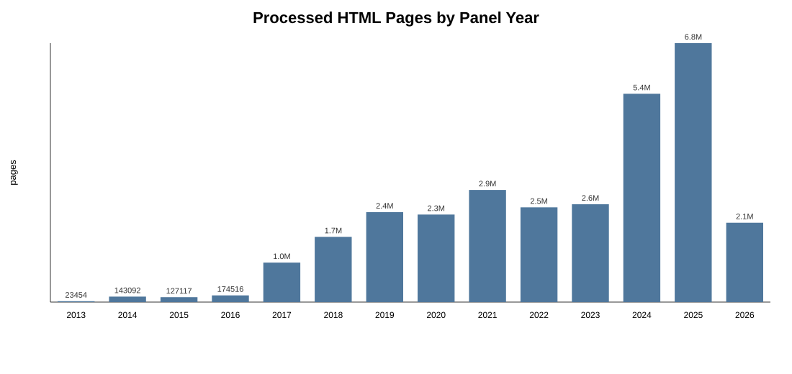

Scale and measurement validity
The research question required a longitudinal view of what problems startups said they were solving. Domains change owners, companies disappear, and present-day copy leaks future information into earlier years. The data layer had to recover each company website at the right historical snapshot before any model touched the text.
Do not download the web
Common Crawl exposes a massive index and compressed WARC files. The system needed to reduce to relevant byte ranges before moving content.
Use managed scans selectively
The completed crawl stored 883.1 GiB. A monitor snapshot showed roughly $199 accumulated AWS cost and about $22/month in storage.
Prompts are fitted instruments
Every classifier needed an explicit construct, human labels, held-out evaluation, and an audit trail—not confidence-by-anecdote.
Keep licensed rows private
Public artifacts can expose schemas, synthetic fixtures, prompts, and metrics; they cannot publish the licensed company data or interview records.
End-to-end architecture
The pipeline separates recovery, measurement, evaluation, representation learning, and analysis. Each layer writes a durable artifact with stable identifiers for the next stage.
01 / UNIVERSELicensed firm table → domain-year panel. Normalize domains, apply sample rules, and preserve the company/year keys used downstream.
02 / INDEXAthena over the Common Crawl index. Match registered domains, exact hosts, and redirects; rank homepage-like URLs; export capped WARC pointers.
03 / RECOVERYConcurrent byte-range fetches → S3. Decompress WARC records, extract HTTP bodies, gzip HTML, checkpoint success/failure, and retry transient errors.
04 / MEASUREClean text → structured LLM extraction. Produce fixed problem components with schema validation, deterministic inference settings, caches, and run manifests.
05 / REPRESENT3,072-dimensional embeddings → sparse themes. Compare classical topic models and hard clusters with top-K sparse representations at multiple resolutions.
06 / EVALUATEHuman codebooks → gold labels → DSPy/GEPA. Split train/validation/test, optimize prompts, apply a validation guard, and report held-out macro-F1 and agreement.
07 / ANALYZECanonical flat files → statistical outputs. Preserve feature provenance, regenerate tables and figures, and record every cluster split, merge, reassignment, or exclusion.
Why Athena instead of running a Spark cluster?
The Common Crawl URL index already lives next to the data in object storage. The expensive operation was a selective scan and reduction, not an always-on distributed compute workload. Athena let the pipeline push domain filters into managed SQL, materialize a small pointer table, and pay only for scans. Spark would have added cluster provisioning, shuffle tuning, and idle capacity without eliminating the need to read the same index.
| Option | Useful for | Why it was not the final path |
|---|---|---|
| Local HTTP crawl | Current sites and small pilots | Fails on dead companies, blocks, and longitudinal leakage. |
| Spark/EMR | Repeated wide transformations and large joins | Operational overhead was high for index reduction plus selective retrieval. |
| Athena + WARC ranges | Serverless index scans and sparse retrieval | Selected: export metadata pointers first; fetch only ranked byte ranges. |
After pointer export, worker processes request only the byte interval that contains one WARC record. Results go directly to S3; EC2 disk is scratch. A URL cap prevents one company with a huge site from dominating the run, and checkpoint rows make a 120-snapshot job restartable.
def fetch_https(pointer: Pointer, timeout: float) -> bytes:
end = pointer.offset + pointer.length - 1
request = urllib.request.Request(
f"https://data.commoncrawl.org/{pointer.warc_filename}",
headers={
"Range": f"bytes={pointer.offset}-{end}",
"User-Agent": "problem-taxonomy-commoncrawl-fetcher/0.1",
},
)
with urllib.request.urlopen(request, timeout=timeout) as response:
return response.read()
Treat LLM extraction as a measurement instrument.
Website prose is noisy: it mixes the customer, the problem, the solution, marketing claims, and investor language. The extractor therefore returns fixed fields under a strict schema instead of free-form summaries. Inference runs at temperature 0, output parsing is deterministic, and the same record identifiers survive through caches and downstream flat files.
Before scaling the company-segment router, I ran a balanced 2,000-company audit against the licensed source taxonomy. Overall agreement was 85.45%, but the confusion matrix was asymmetric: text-derived B2B assignments often disagreed with source-side B2C labels when the described buyer was an institution or operator. That result became a routing diagnostic, not a claim that either label source was automatic ground truth.
The most important validation is external. In an ongoing program of 331 structured founder interviews, founders first describe their company’s problem in their own words and review the extracted components afterward. The order avoids anchoring them on the model’s framing. Only aggregate validation statistics are reported publicly; transcripts and responses are not exposed.
Validation rule: fluent output does not establish validity. Every measurement needs a comparison target independent of the model and source text being evaluated.
Human gold labels, DSPy, and a validation guard
For the customer-need classifiers, six coders iterated through six codebook rounds. Majority votes form the gold labels. Mean agreement is 91.5%, with weighted Fleiss κ = 0.57. Each construct uses separate train, validation, and test partitions; the test split is never available to optimization.
GEPA, implemented through DSPy, treats the classifier prompt as a fitted parameter. A stronger reasoning model reads production-model errors and proposes instruction revisions. The written codebook remains the seed prompt, so the search stays inside a human-defined construct. I tested instruction-only versus demonstrations, 0–16 few-shot examples, direct prediction versus chain-of-thought, optimizer budgets, and smaller production models.
| Need code | Codebook macro-F1 | Selected program test F1 | What changed |
|---|---|---|---|
| Knowledge | 0.773 | 0.797 | Modest gain |
| Efficiency | 0.743 | 0.872 | Large boundary-rule gain |
| Material | 0.805 | 0.882 | Large precision/recall gain |
| Service | 0.708 | 0.696 | Validation-selected prompt slipped on test |
| Experience | 0.786 | 0.857 | Clear held-out gain |
A validation guard chooses among the codebook, optimized instructions, and optimized instructions plus demonstrations. More optimizer budget was not monotonically better, prompts did not transfer cleanly between model sizes, and one validation-selected program still landed slightly below baseline on the untouched test split.
Why sparse autoencoders instead of one hard clustering?
NMF and LDA provide familiar topic-word summaries, but their bag-of-words representation is sensitive to vocabulary and does not naturally express that one firm can address several problems. K-means is efficient and useful for local splits, yet it forces every firm into one centroid and produces unrelated partitions when the requested number of clusters changes.
| Representation | Strength | Limitation for this system |
|---|---|---|
| NMF / LDA | Readable topic terms; fast baseline | Vocabulary-driven and weak at multi-theme membership. |
| Embedding + k-means | Scalable semantic partition | Exactly one cluster per firm; centroid labels are difficult to audit. |
| Top-K SAE | Sparse multi-theme dictionary with tunable resolution | Requires training, neuron labeling, and seed/resolution stability checks. |
The system trains top-K sparse autoencoders over 3,072-dimensional text embeddings at M ∈ {128, 256, 512, 1024}. M = 256 balances distinctness and interpretability; seed stability is checked by matching learned features with the Hungarian algorithm. A scripted review pass records splits, merges, reassignments, and exclusions, yielding 265 active clusters over 88,336 firms.
What did not work cleanly
- Current-web crawling created temporal errors. Historical reconstruction had to preserve snapshot identity rather than collapsing immediately to a year-level row.
- Fetching full WARC objects was the wrong unit. Pointer-first byte ranges reduced transfer and made retries addressable at the record level.
- Prompt optimization was not monotonic. Larger search budgets stayed in a narrow mean-F1 band, and optimized prompts were model-specific.
- One cluster resolution was not enough evidence. The full analysis was recomputed on a raw 512-feature partition to test sensitivity to both resolution and review decisions.
- LLM labels without coder disagreement hid construct problems. Codebook rounds and IRR exposed boundaries that no amount of prompt tweaking could define on its own.
My scope
I led the computational research pipeline and manuscript integration: historical web recovery, orchestration, structured LLM extraction, annotation tools, codebooks, gold-set construction, DSPy/GEPA evaluation, analysis artifacts, and reproducibility. The broader research—including interviews, construct development, and sparse-representation work—is collaborative.
Disclosure: licensed company data, raw web captures, and interview materials remain private. This case study uses aggregate metrics and implementation details only.